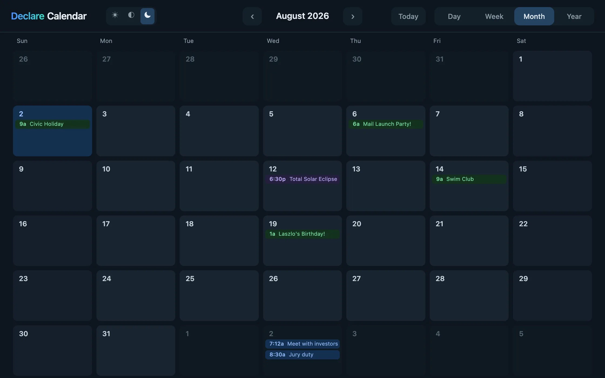
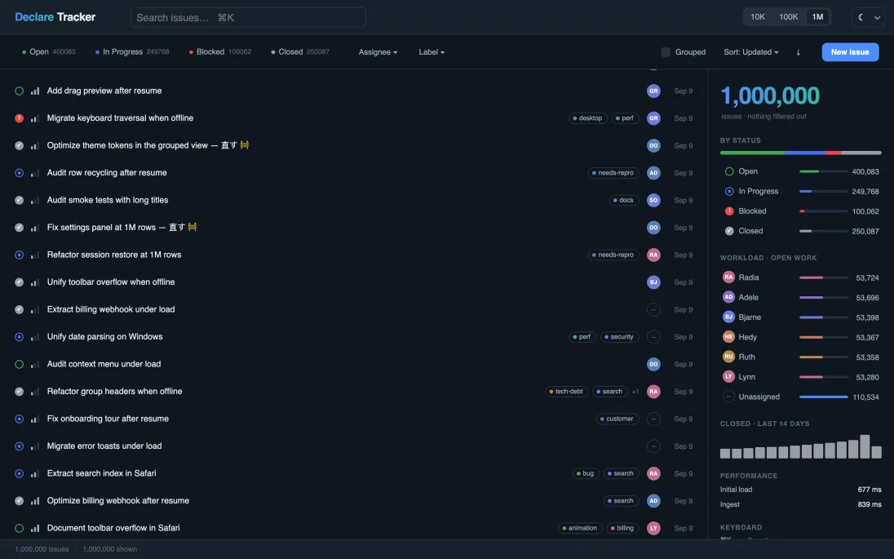
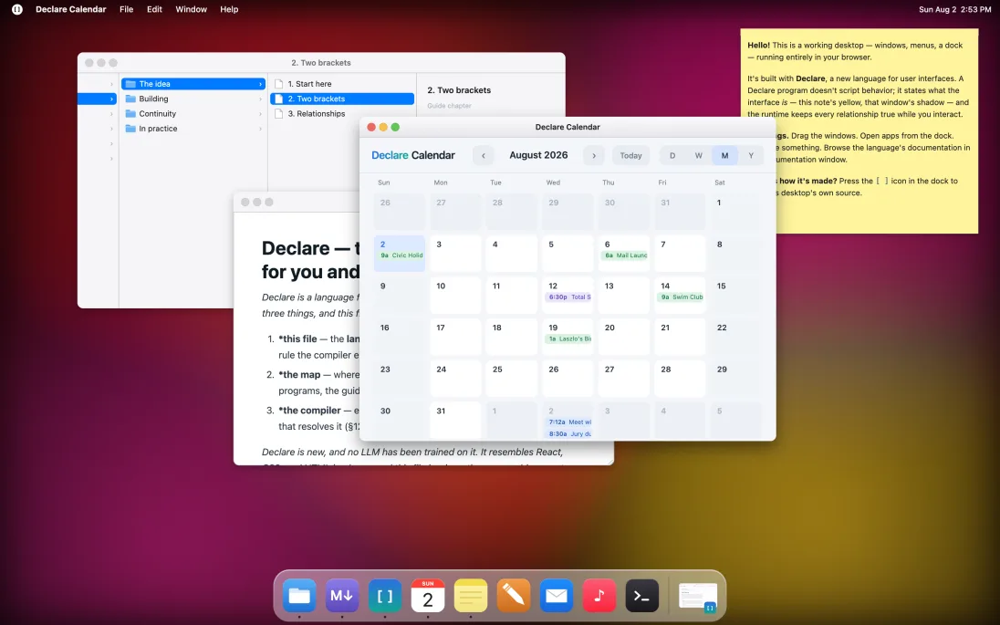

Just as SQL is a domain-specific language for database queries, Declare is a DSL for user interfaces. Its whole surface fits in your head — and inside an LLM’s context window.
Why a new language, now? →
·
The whole language, in one file →
01
Complete programs — open one, read it end to end, and edit it live in the browser you're using.
It’s the kind of experience you’ll see in the best native apps — a view doesn’t switch so much as become the next one, where motion carries meaning, and everything is fast and interruptible.
It runs on real data: open an event, drag it to another day, and it’s moved.
lines of code, plus 214 of comments — four views, zoom, drag and edit
over the wire, gzipped — app and runtime
lines written by hand — an LLM wrote it
Run Declare Calendar →
View & edit source →


1,000,000 issues · search as you type · edit in place, with undo · not one line of virtualization code
1564 lines — 1148 code, 215 comment · 103 KB over the wire, before its data · no dependencies · the same brief in idiomatic React: 2,703 lines, 9 dependencies
View & edit source →

Windows that drag, resize, layer, and minimize into live dock thumbnails · a magnifying dock · menus that follow focus · the calendar running inside one of them
3172 lines — 1699 code, 963 comment · 117 KB over the wire · every pixel drawn from shapes, no image assets
View & edit source →
02
A binding isn’t a callback you remember to re-run — it’s a standing relationship the runtime keeps true, re-derived the moment its inputs change.
Three bindings track one value: the big number, the bar’s width, and its color. Click to bump v — all three update together, and the color crosses cool to warm at the halfway mark.
LIVE · EDITABLE
Revert
03
A view can be built from data instead of laid out by hand — the shape written once, the data deciding how many there are and what each one says.
One Bar, instanced once per row of the data. Edit a number or add a row and the list rebuilds itself — no loop, no keys. And Bar is auto-included: no import, no definition, just use it.
LIVE · EDITABLE
Revert
04
You say where a thing belongs; a Spring finds the path there and settles by physics — motion you declare, not a timeline you sequence.
Click to toggle the ball’s target between two positions. The Spring follows and settles by physics — no timeline, no frames driven by hand.
LIVE · EDITABLE
Revert
When an LLM gets something wrong, the compiler names the rewrite — so it corrects itself instead of guessing, and you don’t inherit an app that quietly runs wrong.
Still a web page
Find-in-page, real selection, native fields
Back button, deep links
Real HTML for crawlers — no server, no hydration
Embeds in any page — React included
Accessibility past native text and fields — a known gap
Data
Load JSON, bind to it — edits write back
SSE and WebSocket streams
A million rows — virtualize on one word
Touch
The browser keeps every gesture you don't claim
A card that drags still pinch-zooms
No stuck hovers, no ghost clicks
One program, four hosts
Browser — DOM
Browser — canvas, verified pixel-for-pixel
Mac native, browser-free — full desktop integration still to come
Headless — where the crawls and tests run
What ships
Buttons to data grids — a library written in Declare
Markdown and rich text built in
Themes, swappable live — no CSS, no cascade
For you and your AI
The whole language in one file — ~10k tokens
Diagnostics that name the rewrite
Ask any value where it came from
An installable agent skill, with evals behind it
Get Started →
Built in Declare
·
View Source
·
Docs
·
GitHub
·
MIT License
·
© 2026 David Temkin
Declare
Getting Started
Why Declare
FAQ
Apps
Docs
GitHub
WHY DECLARE
Start with the obvious objection. LLMs write code now, and they’re best at the languages they’ve seen the most — so the winning move is to use whatever has the biggest corpus and let the model figure it out. By that logic the era of new programming languages is over.
That argument gets its facts right and its conclusion backwards. Producing code is now nearly free; trusting it costs what it always did. An LLM writing React verifies its work by resemblance — this looks like the billion lines it trained on — and resemblance is not correctness. Meanwhile, less and less of the code passes under human eyes, which leaves the language and its compiler as the one reviewer that is always present. Handing the writing to a machine doesn’t make the language irrelevant. It makes it load-bearing.
What an LLM gets from a mainstream stack is corpus leverage: fluency by imitation — broad, shallow, self-contradictory, unverifiable. The other kind is comprehension leverage: a language small enough to hand to a model whole, regular enough that its programs can be analyzed rather than pattern-matched, and backed by a compiler that turns each mistake into a precise correction. Corpus leverage arrives free with popularity. Comprehension leverage has to be designed in — and it is the only kind a new language can compete on.
This is a measured bet, not a hunch. LLMs can learn a language they never trained on from a spec in context — in recent studies, a small language purpose-designed for LLM use, with zero training exposure, beat the same model writing Python, its best-trained language. And what bounds a model’s ability to repair its own mistakes is the quality of the feedback: a compiler that explains beats one that merely rejects, by a double-digit margin.
The studies:
a zero-corpus DSL vs. Python →
feedback quality vs. repair →
Declare’s declarative layer is small — the whole language fits in a model’s context window with room left for your app — and everything inside a { } is ordinary TypeScript, so the hard part of generation rides the largest corpus there is. Where Declare looks familiar, it behaves the way a model — or you — will assume: assignment is assignment, and there is no bypass to forget. Where it’s genuinely new, it looks new — brackets for structure, :path for data — a visible cue to consult the spec instead of autocompleting from memory.
And because a UI’s real structure — components, state, data, what reacts to what — is expressed in the language, the compiler can see all of it: it extracts every binding’s dependencies statically, checks the shape of the tree, and types the seams. What a model reasons about is exactly what the compiler verifies, and its errors are written for that loop — each one states the rule and names the rewrite that fixes it, because the primary reader of a compiler message, now, is an LLM deciding what to do next.
Indexable content is there from the start: the compiler runs your program at build time and serializes what it renders, so what a visitor sees and what a crawler sees can never drift. No server-side rendering, no hydration. That’s why this page works on a static host like GitHub Pages.
All of that is the floor, not the point. The point is what a language makes sayable. The most prized layer of modern UI — the continuity you feel in the best native software, where a view doesn’t switch so much as become the next one, where motion carries meaning and everything stays interruptible — has always been bespoke: specialist craft, one interaction at a time, locked to a platform. It is also the least machine-writable code there is; the corpus is thin, custom, and wrong in ways nothing catches.
Declare makes continuity the grain, not the garnish. Motion is a Spring on an attribute; layout is a reactive slot; a mode is a reversible state — so the continuous version of an interface is often less code than the discrete one. The reference app is a calendar whose four views are one surface seen through a moving, zooming rectangle — normally a bespoke project of its own, here a few hundred lines of declarations, readable end to end, written with an LLM. The whole category moves into the declarative, analyzable layer: the hardest part of ambitious UX becomes the part a model is best at.
And that is the forward-looking wager. There is another generation of experiences beyond the hand-crafted best-in-class interfaces of today — built on a foundation with continuity at its core, enabled at the language level, deployed as universally as a URL, and iterated by imaginative designer-developers working with an LLM at their side. Declare is built to find that out.
None of this trades away the human. What makes code legible to a model is what makes it fast for you to read — and you are still the reader who decides. You don’t teach an LLM Declare with a million examples. You hand it the language and let the compiler keep it honest. The corpus will come; the language doesn’t need it first.
WHERE THIS CAME FROM
I co-founded Laszlo Systems and led the team behind OpenLaszlo — a declarative UI language, first shipped in 2002, that pushed right to the edge of what that era’s web browsers could handle.
What brought me back to UI development was Mesa, a zoomable canvas app I built without using a browser framework, toolkit, or higher-level language. Mesa renders a thousand live objects at a 60fps floor, even on a phone. It’s been positively amazing to see how fast today’s browsers have become — and how powerful and flexible today’s web platform is.
And yet the web as it actually stands is still, mostly, slow and clunky. Even brand-new sites. How can that be?
It turns out the browser isn’t what makes the web feel worse than a good native app. It’s what we’ve built on top of it. A lot of accumulated code — and a lot of accumulated habits — take their toll, and the interfaces that do escape them are hand-crafted, one at a time, by specialists.
In June I handed the original OpenLaszlo compiler to an LLM and got back a modern port that compiles any OpenLaszlo program perfectly, byte-for-byte.
Seeing those programs again through fresh eyes — and seeing how small and how fast the sites built with them are — I decided the language deserved to be modernized. Declare is what came out of that: a direct descendant of OpenLaszlo, with the core ideas intact, built on an entirely new foundation, and shaped to be written with an LLM.
Enjoy!
— David Temkin
Built in Declare
·
View Source
·
Docs
·
GitHub
·
MIT License
·
© 2026 David Temkin
Getting Started
Why Declare
FAQ
Apps
Docs
GitHub
THE LANGUAGE
Declare is a language for building application interfaces. Writing it takes three things, and this file is the first:
Declare is new, and no LLM has been trained on it. It resembles React, CSS, and HTML in places, and this file is where those resemblances stop. Every complete program below is compiled by the test suite, so the examples are current by construction; where this file and the compiler disagree, the compiler is right. Status: pre-1.0, under active design (2026-07).
| where | what is there | go when |
|---|---|---|
declare-help | ask the platform for one exact fact — node tools/declare-help.mjs <name> takes any dotted name, class, attribute, concept, enum, or diagnostic code and answers in the compiler's register, did-you-mean included; a true miss exits 1 and says what it searched, so silence is trustworthy | you need a name, a type, a signature, or what a code means |
declare-model.json | what declare-help reads: every component, attribute, type, method, event and diagnostic, generated from source; a class's page carries its ancestors' members too, so everything reachable on it is on one page | you want to browse the whole surface rather than ask one question |
library/ | the standard components — controls, structure, layouts, embedding, and the Control base your own controls extend — written in Declare | you want to know what ships, or to read how one is built |
apps/ | complete programs; apps/calendar/calendar.declare (~850 lines) is the reference, and apps/birds/birds.declare is the worked example of location + waypoint | you want the idiom at full scale |
docs/guide/ | a narrative course, chapter by chapter | you want the reasoning, or you are learning rather than looking up |
docs/operational/ | install, dev server, build, deploy | you are running or shipping rather than writing |
Those six carry everything you need to write Declare. The language is closed and small, so when you need a name you do not have, ask for it rather than invent it — that is what declare-help is for: a guessed attribute is a compile error, and a hand-built widget is usually one the library already ships. (docs/system-design/ also exists — it is the design record, including superseded decisions. Background, not truth.)
One boundary makes the rest of this file readable. Every capitalized tag is a component — View, Text, and Image, but equally Dataset, State, Spring, and Keys. Components are surface, and the reference lists them all. The language is the grammar that declares, instantiates, configures, and relates them, and that grammar is what follows.
A Declare program is a tree of components whose attributes are related to each other by standing expressions the runtime keeps true.
A binding is a relationship, not a callback. Read a reactive value inside one and you are subscribed to it; assign to that value and everything bound to it updates. There is no re-render, no diffing, no dependency array, and no hook, because nothing was ever a render.
App [ width = 400, height = 140, fill = darkslategray, textColor = whitesmoke,
count: number = 0, // reactive state
add: View [ x = 20, y = 20, width = 120, height = 40, cornerRadius = 10, fill = royalblue,
onClick() { count = count + 1 },
Text [ x = 20, y = 10, text = "Add one" ]
],
Text [ y = 80, x = { (parent.width - this.width) / 2 },
text = { `Clicked ${count} times` } ]
]Click the view and the label updates; resize the window and it re-centers. You wrote no update logic for either, and there is nowhere to put any. Every section below is this same idea applied to structure, space, data, style, and time.
{ } is TypeScript, and only TypeScript. Bare slots have their own literal vocabulary, and it stops at the brace: width = { 100% } is a syntax error, and a color inside braces is 0x4169E1, not royalblue or #4169E1. (§2)count = count + 1 sets and notifies. There is no setState, no setAttribute, and no way to change a value without the cascade. (§5)[ ] tree never generates children from an expression, so React's {items.map(…)} and {cond && …} have no equivalent there: a collection comes from replication over a datapath, and conditional presence is visible. (Those operators are ordinary TypeScript in any { } value, and a handler can build views imperatively with createView — the declarative tree is simply not where either happens.) (§7)app.width. (§6, §9)onLoad, onArrive, afterSettle). A loop or timer that checks whether something has happened yet is a constraint or an event written by hand — almost always the wrong path. Time is only ever an input — a duration to animate over, a frame step to integrate by. (§5, §10)Two brackets carry the entire syntax. [ … ] holds a component's members — attributes, declarations, methods, children — and the bracket nesting is the tree. { … } is TypeScript, type-checked against every component's real API.
A value slot accepts four things, and the spelling tells you which:
| you write | it is | example |
|---|---|---|
| a bare value | a literal, set once | width = 100%, fill = navy |
| a bare list | a literal list, for an array-typed slot | listenTo = ["delta", "done"] |
a { … } value | a live expression — a constraint | width = { parent.width - 10 } |
a :-prefixed path | a read from bound data — a datapath | text = :title |
A bare literal is the value itself, so a script { } constant is not one: tint = SEAT_FREE fails in a bare slot. Reach a constant through braces — tint = { SEAT_FREE }.
Bare slots have a small literal vocabulary the compiler owns: Lengths (100%), colors (navy, #336699), and keywords (center, x). Inside { } none of it exists. You are in plain TypeScript, an identifier means what TypeScript says it means, and the compiler never reinterprets it.
fill = cornflowerblue, // ✓ bare slot, a named color
fill = { hovered ? 0x6495ED : 0x4169E1 }, // ✓ in braces, TypeScript number
fill = { hovered ? #6495ED : 0x4169E1 }, // ✗ no such syntax in TypeScript
width = 100%, // ✓ bare slot, Length literal
width = { 100% }, // ✗ compute it instead:
width = { parent.width - 40 } // ✓A body is TypeScript at full expression strength: ternaries, template literals, array chains, closures, and casts (x as T, x!), which are type-checked and then stripped. Two limits, each a compile error naming the rewrite. A value body is a single expression — statements live in methods. Type annotations do not live in bodies — a declared type belongs on the attribute, as name: type = …; that covers locals and lambda parameters too — narrow with x as T. (A top-level script { } is plain TypeScript and exempt.)
A :path may also appear inside a { } body, and this is central rather than exotic: it is how anything conditional over replicated data gets written. text = { :on ? :title : "—" } reads the datapath exactly as the bare form does, then computes with it in TypeScript. Read { } as "TypeScript, plus datapath reads."
Two lexical notes. A "…" string ends at its line, in a bare slot as in a { } body; a """ block is the form for long text. And a Dataset's literal body is strict JSON (§7) — the one place { } is not TypeScript at all.
Everything inside [ ] is a member, in one of six shapes. Two of them look nearly identical and mean different things.
width = 100%, // SET an attribute that already exists
x = { parent.width - 40 }, // SET it live — a constraint
text = :title, // SET it from bound data
label: string = "", // DECLARE a new reactive attribute
selected: boolean = false,
tint: Color = navy, // any value type, bare-literal default
count: number, // no default — undefined until written
rows: number[] = [], // an array, element-typed
panel: Menu = null, // a component class — the slot holds an instance
select() { selected = !selected }, // a METHOD
onClick() { count = count + 1 }, // a HANDLER — `on` + an event this node fires
onPointerMove(e: PointerEvent) { x = e.x }, // pointer handlers get a typed payload
draw(d: Draw) { d.fillStyle = "#4169E1" // a DRAWING — see below
d.fillRect(0, 0, 12, 12) },
bg: View [ fill = midnightblue ], // a CHILD, named — reachable as `bg`
Text [ text = "OK" ] // a CHILD, anonymousdraw(d: Draw) is a first-class member, not an escape hatch. It records a display list of plain ops that every renderer replays, and it is a tracked computation like any constraint: it re-runs when what it read changes, never per frame. d takes the Canvas2D drawing calls (fillStyle, beginPath, moveTo, stroke, …).
name = value sets an attribute that exists; name: Type = value declares a new one. Declaring is how reactive state enters a program; setting is how it is wired. A declaration's type comes from the same vocabulary a signature's does (below): a primitive, a component class, a function, or an array of any of them.
A method's signature is typed, name-first: select() { … }, input(v: boolean) { … }, quant(v: number) -> number { … }. Every parameter carries a written type — a primitive, a component class, an event payload (onPointerUp(e: PointerUpEvent)), a function (f: (id: string) -> void), or an array of one (Window[]); a ? after the type (c: Menu?) says the value may be absent, and the body must check. Omit -> Ret for a method that returns nothing. A computed value is still not a method but an attribute with a { } default, segIndex: number = { … } — an attribute stays reactively true; a method runs when called.
Events from outside the tree arrive as children. Keys [ onKeyUp(e: KeyEvent) { … } ] gives a node app-wide keyboard handling regardless of focus. There is no subscription syntax and nothing to unregister: a source is a child, so it lives and dies with the node that declares it.
Members are separated by commas — the separator is required, and the compiler names the spot when one is missing. A trailing comma before a closing ] is legal; the formatter (§12) removes it.
A bare name resolves outward through the enclosing brackets, innermost first — the brackets are the scope exactly as they are the tree. Each [ ] you are nested inside is a level whose surface is that component's whole member set, and the nearest level owning the name wins. The compiler rewrites the read to an explicit path, so this is lexical and settled at compile time, not a lookup that walks anything at runtime. One consequence to hold on to: every view carries the built-in attributes, so a bare width always means this node's width — built-ins never resolve outward.
Three reserved words say it explicitly, and nothing else may take their names: this (the node the code is written on), parent, and app (the running application, from any depth — which is why application-wide state belongs there). Bare App is the class; app is the instance. A fourth, classroot, belongs to authoring a component and arrives in §4.
A component is a class. Instantiate one by naming a type with a [ ] body; define one with class Name extends Base [ … ].
class Chip extends View [ height = 30, cornerRadius = 10, fill = darkslategray,
label: string = "",
width = { this.t.width + 20 },
t: Text [ x = 10, y = 5, fontSize = 12, text = { label } ]
]
App [ width = 400, height = 100, fill = black,
layout: SimpleLayout [ axis = x, spacing = 10 ],
Chip [ label = "one" ],
Chip [ label = "two" ]
]App is the one root, one per program; with width and height unset it fills its host. Any instance may declare its own members — state, methods, handlers — with no class at all, because the compiler synthesizes an anonymous subclass, and the instance remains a subtype of its base. Promote a one-off to a named class when you instantiate it twice, or when you need to name its type.
Besides class, the top level holds script, include, use, font, style, and stylesheet — that is the complete set, in any order, before or after the root instance; extends may name a class declared later in the file. script { … } holds free TypeScript — helpers, models, whole libraries — and may import ES modules (a file, or an npm package by bare specifier; bundled at compile). script [ "file.ts" ] is the same block loaded from a file, spelled like include and tracked like one — edit the file and the program recompiles; a constraint may call into script, opaquely (§5). include
[ "path.declare" ] merges another file's top-level declarations, once. use [ Name ] keeps a component the build would otherwise drop, for when your code constructs it by name at runtime (createView, §7). font Name [ … ] declares a font family (a use site picks with fontFamily = [Name, "system-ui"]), and style and stylesheet are style constructs (§9).
classrootclassroot is legal only inside the body of a class you are defining, and nowhere else — if you are not writing class Name extends Base [ … ], you do not want it. It names the component instance itself, from any depth inside the class: the reach for a handler or a deep subview acting on the component, and the explicit spelling when a nearer child shadows a bare name.
class WeatherTab extends View [ selected: boolean = false,
label: string = "",
select() { selected = !selected },
header: View [
onClick() { classroot.select() }, // `this` here is the header, not the tab
caption: Text [ text = { classroot.label } ] // reaches the tab from a leaf
]
]There is no <Stack>, no <Row>, no flexbox, and no grid. A view positions its children absolutely by x/y until you set a layout: member — and because that member is an ordinary reactive slot, it can be swapped, derived, or animated.
layout: SimpleLayout [ axis = y, spacing = 10 ],
layout: WrappingLayout [ spacing = 20, lineSpacing = 20 ]Stacking order is declaration order; later siblings paint on top. There is no z-index, so chrome that must float above everything is declared last.
→ the layouts that ship: library/ · their attributes: the model reference
A { } in a value slot is a constraint: re-evaluated when, and only when, its inputs change.
x = { (parent.width - width) / 2 }, // re-centers on resize
fill = { selected ? 0x4169E1 : 0x191970 }, // royalblue / midnightblue
text = { data.failed ? data.error : "Loading…" }Dependencies are extracted statically, by the compiler. Nothing is tracked at runtime: the compiler reads your expression, reads through what it calls, and wires the result once.
A constraint stays live through everything Declare it reaches. Call your own methods, chain array operations, read through a closure — every read inside all of it is a wired dependency, rebased onto what you passed, so { this.price(app.cart) } depends on whatever the price method reads of the cart. The analysis collects potential reads, not observed ones: { a ? b : c } depends on all three. A script { } function is the one opaque call: script is outside the reactive system, so { fmt(app.total) } depends on app.total — the values you pass — and never on what fmt does inside. Pass values, not nodes (a node reference never changes, so a node-typed argument is refused); a helper that should be analyzed is a method.
Assignment is the setter. count = count + 1 updates the value and notifies everything bound to it; there is no bypass. Reads are symmetric — a bare read is the tracked read.
A handler's writes do not take effect one at a time. When it returns, everything it changed is applied together — constraints re-derive, views appear and retire where data now says so, layout places, sizes update — one indivisible step, run to completion, called the settle. Nothing paints in the middle of one, and no time passes inside one: a fetch or a glide cannot be in a settle, only cause the next. This is why the world is never half-updated, and why history can count "one entry per settle" (§6). Animation is a user of it, not an exception: a Spring writes its attribute once per frame, and each frame's writes get a settle of their own — motion is many small settles, never one long one. (The physical sense is a different fact with its own name: an Animator that reached its destination reads atRest = true, across however many settles the journey took.)
Inside a handler, the world you read is the world before your writes land. Almost always the right response is no response: state what should be true with a constraint, and it is true after this settle and every one after it. But some work is irreducibly a reading of the new geometry — aiming a camera at a view your write just caused to exist, measuring where something landed. For that, leave one named step on the far side:
addItem() {
app.d.set(["items", 0], { label: "new" })
afterSettle(app.showNewest) // runs once, at THIS settle's close
},
showNewest() { app.frameOn(app.list.first) } // the new row is real, placed, sizedThe step runs exactly once, when the settle your handler triggered has closed — and before it presents, so what the step writes lands in the same frame as the change itself. It is tied to your change, not to a clock: no interval, no frame callback, nothing standing afterward. Constraint first, afterSettle second, and never for waiting — anything later than this settle's close is a value changing, and values changing is what constraints are for.
Boot is the one settle with no handler inside it, so its close is delivered instead: onReady() fires once, on the App only, when the first settle has completed — tree standing, geometry computed, before anything presents, so what it does is in the first frame the user sees. Ask first whether you need it at all — readiness is usually a value — and keep it for the genuinely once-and-imperative: seed the camera, start the tour, open the socket.
A { } can appear on either member kind from §3 — setting an existing attribute, or declaring a new one — and one mechanical difference decides everything: whether the slot gets a cell of its own. A set attribute owns a cell: a standing constraint the runtime keeps current, and guards — a direct write is refused, with a message naming the fix. A computed default (segIndex: number = { … }, a declaration whose default is an expression) is a formula with no cell: reading it inlines the expression, and an assignment simply replaces it — the right tool for a value you may take over later, which is why TextInput offers initial = { … }, the editable twin of a read-only text = { … } (a control's input(v), §11, is the same idea).
| you wrote | owns a cell? | reading it | assigning to it | reach for it when |
|---|---|---|---|---|
width = { … } — set an existing attribute | yes | subscribes to the slot | refused at runtime | the value is simply derived and should stay that way |
segIndex: number = { … } — declare with a default | no | inlines the expression, so its deps become yours | lands, and the formula is gone | you may want to take the value over later |
Use both; know which you wrote. One rule covers every case: derived state is never assigned — change its inputs instead.
One mechanism takes over a cell-owning slot without assigning to it. An Animator, a Spring, or a State override suspends the driver and resumes it, re-evaluated, on completion — the sanctioned path, and why a state may override a { }-owned slot at all.
A constraint reads specific, named things, and the compiler must be able to name every one. When it cannot, that is a blocking compile error — DECLARE7001, the residue, meaning the part of an expression no static reading can name — rather than a silent fallback. Do not try to hold the refusals in your head; the diagnostic names the exact read it could not follow and the rewrite that resolves it. Three instincts account for most of them:
this.children.map(…). The number you want lives in the data, not the views: count the Dataset (§7).this[k]. Name the slot, or move the lookup into a method the compiler reads through.theme = { { ...theme, accent: red } } reads like a harmless override and is a cycle by construction. Derive from a base: the app's theme, or the parent's.script { } is foreign code — wholly outside the reactive system. It may hold arbitrary TypeScript: stateful helpers, caches, classes, whole libraries. The compiler never reads a script body; a call is opaque, and its own state is invisible — if a function's answer can change without your inputs changing, hold that state in a node. Two direct uses stay refused in reactive code: a constraint naming a script let (a snapshot with no wake-up), and any body writing one (each body holds a copy, so the write lands nowhere — state that changes is an attribute). Handler code is under none of the reactivity rules above — it is ordinary TypeScript: locals, loops, switch, the host's fetch/URL/timers — and genuinely dynamic work belongs there or in the framework's own primitives. (Two things it is not: async — a handler is synchronous, a value the screen derives from is a DataSource — and a door to bare browser globals; see Vocabulary → Types and functions for what every body may name.)
Only declared reactive attributes participate at all, so locals and plain objects in script { } cost nothing.
You never have to guess what a constraint is wired to — __declare.explain answers it on the running program (§12).
A view's size on each axis is one of three things: unset auto-sizes to the bounding box of its visible children, a constant is fixed, and a constraint is whatever it computes.
A view has no minHeight, maxHeight, or overflow attributes. Two read-only intrinsics, contentWidth and contentHeight, expose what the content wants, so any clamp is arithmetic.
height = { Math.min(contentHeight, 480) }, // grow to a cap, then stop
clip = true // hide whatever passes the capclip = true clips children to the box, scrolls = y scrolls taller content natively, and a child opts out of its parent's regime with ignoreLayout or ignoreClip.
Positions are literals. x = center and x = end, and the same on y, place a view against its parent — resolved reactively, exactly like 100%. The closed set is center and end; the start is 0. One optical exception: on a Text, y = center centers the ink, the cap-height-to-baseline band, so labels read centered regardless of font metrics. Every other view centers its box.
The App fills its host by default, so App [ … ] with no size line fills the window and resizes with it, while an explicit size makes a fixed widget. For an embedded app the host is its container element, which is what lets apps nest. Responsive code reads app.width; the App also carries the live host facts — viewport, colour scheme, pointer — as reactive attributes.
App [ minWidth = 480, minHeight = 420 ] sets a size floor: below it the app stops adapting, holds the floor, and the host pans instead. It is a policy the host cooperates with rather than clamp arithmetic you write into constraints — and it is the App's alone, not a view attribute.
There is no router. location is the app's slice of the URL, as one two-way reactive string the host seeds before first settle, mirrors outward, and writes back on back/forward. A view that manifests a location declares it with shows; a place inside one is named with anchor; and any view becomes a link with link — one reference string, the same one an authored Markdown href carries:
home: View [ shows = "home",
pill: Text [ text = "Why", link = "#why" ], // a destination
faq: Text [ text = "The note", link = "#story" ], // an anchor — its location DERIVED
repo: Text [ text = "GitHub", link = "https://github.com/example" ]
],
why: View [ shows = "why",
note: View [ anchor = "story", width = 200, height = 80 ]
]shows implies the visibility (the location's destination part equals the name — the runtime strips its own trailing @name), and the compiler gains a registry: every literal reference is checked at build — a typo'd #stroy is a compile error naming the real names — and data-driven references (link = { :to }) are checked when the crawl evaluates them. A linked view realizes a REAL <a href> (⌘-click, copy-link, the crawler's edge); link = "" is not a link at all. replace = true beside a link overwrites the history entry — fine-grained movement within a place (a deck's arrows) must not bury Back.
Every arrival — a link, a prose href, a pasted URL, back/forward — reduces to one operation, app.follow(ref), and one app-scoped hook sees them all: onFollow(ref) -> ref' may transform, veto (""), or log; it runs ONCE, and on a cold arrival it runs at declared initials, before any data loads — so gate access at the destination, where a raw URL cannot bypass it:
account: View [ shows = "account", visible = { app.authed } ],
login: View [ shows = "account", visible = { !app.authed } ] // location preservedonFollow holds the arrival while it is still a string — the door. onArrive(target) is the landing: the same arrival, delivered as the view the reference names, once it exists and has its geometry — immediately if already standing, or as soon as data builds it; the waiting is the platform's. Undeclared, the landing is the built-in scroll: an arrival starts at the top, an @name anchor scrolls into view once its prose has measured, revealInset honored. Declaring it replaces that policy — write it where your space's idea of showing is a camera or a pan (onArrive(target: View) { app.frameOn(target) }), and compose the scroll back with app.reveal(target) when you want both. It runs per follow — arriving where you already are arrives again — and Back and Forward come through the same door, so a motion answered here answers them too. Motion is never waited for: the target arrives when it structurally exists, even if still gliding into how it looks.
For computed families the grammar after # is the app's own (#deck/q3/47 — parse it from app.location, derive everything). Never assign the derived state — that displaces its constraint (§5) and disconnects the back button. The build's crawler boots the app headless at every registry destination and traverses the links each render emits — which is what makes a deep link indexable, and why the crawl fails loudly on a reference naming nothing.
Location is the app's shareable coordinates — what a recipient should see when handed the URL, nothing more; a draft or a session's working values are ordinary attributes. (The fragment never reaches the server — location stays client-side by construction.)
State that the Back button should undo but a stranger should never see — the turns of a search, which page of a wizard — is the third kind, and it has its own attribute: waypoint, location's twin with the opposite visibility. One two-way reactive string, grammar the app's own, carried in the History entry itself and never in the URL. A history entry is the pair (location, waypoint) — one entry per settle in which either changed, and one Back restores the pair atomically — so back/forward can work over a URL that never moves, while a reload, exactly like a pasted URL, rebuilds from location alone at the declared initial step. The dividing test, applicable in five seconds: would you hand the value to a stranger? Yes → location. No, but Back should undo it → waypoint. Neither → an ordinary attribute. Waypoints are coordinates, never data (derive the data; keep the string small); they pass no onFollow; and the crawl never sees them — crawlable and shareable are the same property, and both belong to location.
→ link/shows/anchor/replace, App.follow/onFollow/onArrive/reveal/revealInset: the model reference
A datapath selects a place in the data. Descendants read fields relative to it with :path, and a path matching many records replicates its node — one instance per record. This is the replacement for React's {items.map(…)}: a collection of children comes from data, never from code in the tree.
App [ width = 420, height = 260, fill = midnightblue, textColor = gainsboro,
people: Dataset {
{ "rows": [ { "name": "Ada", "score": 90 },
{ "name": "Grace", "score": 80 } ] }
},
list: View [ x = 20, y = 20, datapath = { people.value },
layout: SimpleLayout [ axis = y, spacing = 10 ],
View [ height = 20, datapath = :rows[], // one instance per record
n: Text [ width = 150, text = :name ],
s: Text [ x = 150, text = :score ]
]
]
]The [] suffix is what replicates. datapath = :rows[] says this path matches many records, so make one instance of this node per record; without the brackets, :rows is an ordinary read of whatever is there, and [] may appear only at the end of a path.
Between those, a path may select: :path follows JSONPath (RFC 9535) over the shipped subset — [0], [-1], [1:4], [*], ['quoted key']. So :rows[*].label is every row's label, and :rows[2:8][] replicates exactly that range, each instance cursored at its real index.
A Dataset's literal body is strict JSON — quoted keys, no trailing commas. The replicated node is anonymous, but names inside it resolve per instance. Identity is inferred — a record's id field is its identity by convention, so reconciliation reuses instances across sorts, filters and edits with nothing declared.
Count the data, not the tree. A Dataset's .value is the parsed data, so a count is ordinary TypeScript on it. Reach for this whenever you would have counted rendered rows.
A DataSource is a remote resource whose lifecycle is reactive state — data: DataSource [ url = "data/events.json" ]. Nothing loads on its own unless you set auto = true; forgetting .fetch() is legal, silent, and the common first bug, and onInit() is the usual place for it. Screens then derive from the resource (shown = { data.loaded }) rather than being toggled. An optional schema = [ field: type, rows[]: [ … ] ] declares the response's shape: it validates the payload on receipt — so malformed data yields .failed rather than undefined three bindings deep — and lets every :path be checked against the shape at compile time. Without one, paths are dynamic: an unresolved :path yields null and the bound attribute falls back to its default.
Two-way binding is opt-in, with <->, and for leaf editors only — TextInput [ text <-> :title ]: the right-hand side names a place in data, either a datapath or a { } yielding a field name, resolved against the nearest enclosing datapath — an editor with none is a compile error. To drive an ordinary slot, use the value pattern: text = { app.note } plus input(v: string) { app.note = v }. One-way :path everywhere else. It is the only arrow in the language.
Datasets are mutable from handlers — d.set(path, v), with insert, removeAt and move for collections. A path is a segments array (["rows", 0, "name"]) or a JSON Pointer string (RFC 6901 — "/rows/0/name", and "/rows/-" appends). A write wakes exactly the bindings that read the changed region.
A derived dataset recomputes from its inputs — cal: Dataset [ contents = { app.buildModel() } ].
Large collections virtualize on one word. virtualize = true on a replicated node builds only the rows near the viewport and leaves the rest logical — same records, same paths, same behaviour, reconstructed indistinguishably as you scroll. It is a boolean, off by default — full materialization keeps browser find working over every record. There is nothing else to write: no row heights, no scroll wiring, no keys.
When structure is genuinely imperative, build it from a handler: parent.createView(tag, props) instantiates a component by name into the receiver — a full citizen, and the parent's arrangement and auto-size take it in on arrival. Its pair is view.discard(): one verb unlinks the view, retires its whole subtree, and re-packs what it leaves behind. Reach for replication first — it reconciles, keys, and tears down for you — but the imperative door is open (use [ Name ], §4, keeps a string-named component in the build).
Data that keeps arriving is a stream — EventStream and Socket, connected exactly while active and a url say so, delivering onMessage and a reactive last. Same lifecycle shape as a DataSource, and nothing to unsubscribe.
→ Dataset and DataSource attributes, Stream/EventStream/Socket, View.createView, View.discard: the model reference · paths, selection and editing: the data chapter · virtualization at scale: scale
Handlers are methods named with an on prefix, answering this node's own events: onClick, the pointer and touch families, onKeyDown and onKeyUp on the focused view, and onInit after construction.
Nothing bubbles. A handler fires on the node that declares it, full stop. A child that needs to tell its owner something calls a method. There is no addEventListener, no event keyword, and no capture or propagation phase; the on prefix is a naming convention, not syntax.
Pointer input has two layers. The raw layer — onPointerDown/Move/Up, the multi-finger touch family, and onWheel — reports what the pointer physically did, immediately: the layer for manipulation. The resolved layer — onClick, onDblClick, onHold — reports what the user meant, decided after watching the whole gesture: the layer for commands.
Pointer, not mouse: one handler serves a mouse, a fingertip, and a pen, and it fires at once for each — there is no compatibility event here and nothing to fall back to. onTouch… is the separate multi-finger stream, for when you need the finger list rather than a point.
onClickactivates,onPointerDownmanipulates.
Reach for the raw layer to run a command and it misfires on touch, where a finger landing on a button may be starting a scroll. Because the runtime resolves the gesture, a wandering pointer is a drag and activates nothing, and declaring onDblClick makes that view's single click wait out the double window. onPointerMove and onPointerUp carry root-space points, because a drag needs a frame that does not move with the dragged thing; onPointerDown and onClick carry view-local ones.
One fact a drag handler must not miss: a gesture the browser reclaims — a touch that became a scroll — still delivers onPointerUp, but with e.canceled true. Commit on release only when it is false, or an interruption reads as a drop.
The browser owns every gesture until a view claims one — and declaring the handler is the claim, taking exactly what that handler needs to fire and nothing more: onPointerMove claims the single-finger drag over its view and subtree while pinch stays the user's, the raw touch family claims every finger (the app then owes its own zoom), onWheel claims the wheel stream — trackpad pinch included, arriving with e.pinch true — and a scrolling view is the opposite move, delegating its panning to the browser. Claim the least you need, on the smallest view that needs it; claiming at the App is legitimate exactly when the app is the surface — a map, a canvas, a game taking full gesture control.
visible is presenceA view at opacity = 0 is invisible but entirely present — it holds its layout space and still takes clicks, subtree included, exactly as CSS opacity does. That is a tool, not a trap: a fully transparent view is the natural press-catcher — a scrim behind a modal, a hit target larger than the mark it serves.
visible = false is the other tool, and it is the stronger one: it removes the view from input and from its parent's layout and auto-extent. So a fade that should end in absence is visible = { opacity > 0 }, while flow content that merely fades in should stay visible and let opacity do the work. pointerEvents = "none" is the third, for a view that should be seen and not touched.
Every view carries two read-only intrinsics. hovered is true while the view sits on the live hit chain — the topmost visible view under the pointer, plus its ancestors — so it is occlusion-correct, and it is always false on touch. pressed is true from a pointer-down on the chain until release. Read them anywhere a value goes, including as a state's condition (§10):
fill = { hovered ? 0x4169E1 : 0x191970 } // royalblue when hovered, else midnightblueDeclaring either is a compile error; assigning one is refused at runtime, the same guard §5 describes. Like contentWidth, they are computed for you.
There is no CSS, no stylesheet file, no selector, no cascade, and no specificity — which is also what makes a non-DOM renderer possible. Your CSS knowledge transfers: colors, font stacks, and shadows read the same. The names do not. A border is a stroke, rounding is cornerRadius, and borderWidth, boxShadow, and outline do not exist.
What replaces the cascade is prevailing slots: set one high in the tree and every descendant follows it until one overrides. The text quartet — fontFamily, fontSize, fontWeight, textColor — works this way, and so does theme, a token record every color in an app should name once.
theme = { Themes.sanFrancisco(app.dark) }, // on the App: a preset, light or dark
fill = { theme.surface }, // read it anywhere below
panel: View [ // on a DESCENDANT, override one token
theme = { { ...app.theme, accent: 0xCC3333 } } // (on the App this reads itself — §5)
]Start from a library preset — Themes.sanFrancisco / .cupertino / .mountainView / .redmond, each taking a dark flag, available without an include — and spread to change a token. The standard library reads specific token names, so build from a preset rather than an empty record; library/themes/sanfrancisco.declare names them all.
The { { … } } is not special syntax: the outer braces open the constraint, the inner ones are a TypeScript object literal. With no theme declared an app renders the default, and that zero-declaration look never varies by system dark mode — following the system is the one-line opt-in above.
Two top-level forms sit above per-view attributes, both checked at compile time, so a stale skin fails loudly where CSS rots silently. A style bundle is a reusable set of attribute values a view opts into with styles = [ … ]. A stylesheet is an app-wide swappable skin whose entries are a dictionary lookup on the class name — no selectors, no structural matching, no specificity — matching a class and its subclasses, with fields merging down the chain.
style card [ cornerRadius = 10, fill = { theme.bg } ]
stylesheet Dark [
theme: Theme [ accent = #336699 ], // the sheet's own theme
View: [ opacity = 0.9 ] // entries keyed by CLASS name
]
App [ stylesheet = Dark, // apply it — a prevailing slot, so swap it live
View [ styles = [card] ] // a bundle is opted into per view, by list
]stylesheet is a prevailing slot like theme: set it high, assign a different sheet at runtime, and exactly the governed subtree restyles.
A theme appears in two places, and they are not the same thing. On a view, theme is a prevailing attribute holding a plain TypeScript record. Inside a stylesheet, theme: Theme [ … ] declares the sheet's own record in the [ ] layer, which is why its colors are bare literals rather than the 0x form braces require.
Precedence is fixed: an author's own write or binding always outranks a stylesheet field. A skin can never fight your code.
Both halves of this section do the same thing: declare the destination, not the transition.
A state is a named, reversible bundle of attribute overrides applied while a condition holds.
App [ width = 360, height = 200, fill = black, textColor = whitesmoke,
card: View [ x = 30, y = 30, width = 300, height = 70, cornerRadius = 10, fill = midnightblue,
Text [ x = 20, y = 20, fontWeight = bold, text = "Summary" ],
open: State [ applied = { hovered }, height = 140, fill = steelblue,
Text [ x = 20, y = 50, width = 260, textColor = gainsboro, wrap = true,
text = "height, color, and this whole line arrive together" ]
]
]
]While the condition holds, the overrides — and any children declared inside the state — apply; when it lifts, everything reverts. The "set it on enter, forget to unset it on exit" bug is unrepresentable, because an attribute's value is a pure function of its base plus the active states. That is what lets states compose and interrupt. When two active states override the same slot, the later declaration wins.
A state overrides its own element's attributes only. It cannot reach into a child — top.bg.opacity = 0.5 is a compile error, because a member always sets its own element's attributes. To coordinate several views from one condition, declare a state on each of them reading the same flag, or give the child a constraint that reads it:
bg: View [ opacity = { app.open ? 0.5 : 1 } ], // the child derives
bg: View [ dim: State [ applied = { app.open }, opacity = 0.5 ]
] // or owns a stateA state is driven by its condition (applied = { … }) or imperatively by the verbs — apply()/remove()/toggle() from a handler. One or the other: the gate owns applied, so a gated state changes when what the gate reads changes.
A Spring drives one attribute toward a reactive target. Declare where the thing belongs and the spring finds the path, so a change of target mid-flight is simply a new destination and interruption needs no code.
slide: Spring [ attribute = x, to = { on ? 340 : 20 }, stiffness = 170, damping = 20 ]Motion is the one place time is legitimately an input (§1, nothing waits): Animator for a value that changes over a duration, Spring for one that moves toward a target — the house idiom — and Time for the clock itself — its facts (now, minute, …) are inputs a constraint derives from, and its onTick(dt) at tick = frame is the one per-frame handler, there only to integrate, the previous value being the input; a per-frame onTick that ignores dt is polling. setTimeout is for a timing rule — a debounce, a request timeout — and a timer does not die with its node, so cancel it yourself. (Finishing after your own change has landed is neither — that is afterSettle, §5.)
Because states, springs, and layout all sit on one reactive core, arrangement animates: spring a few geometry scalars and every constraint derived from them moves in lock-step.
→ State, Spring, Animator, Time attributes: the model reference · the idiom at scale: apps/calendar/calendar.declare
Declare ships a standard component library in library/, written in Declare itself with no privileged API underneath. It auto-includes by bare tag — no import, no module ceremony — components follow the prevailing theme, and focus behavior (Tab traversal, activation, a traveling focus indicator) is provided undeclared. Check there before building a control by hand.
Two contracts are worth learning because your own components should obey them too.
The value pattern. A control's value is a plain reactive attribute, in one of three forms: standalone, where the control owns its state and you read it by name; app-owned, deriving down and delivering up; or data-owned, <->, editors only. The second is a pair, and splitting it is the §5 rule biting. A control's default input writes its own attribute, so a one-way checked = { app.muted } with no input override makes the control's own edit an assignment to a cell-owning slot — refused (§5). Override input and the edit goes where the value actually lives.
Checkbox [ label = "Mute", checked = { app.muted },
input(v: boolean) { app.muted = v }
],
Slider [ value = { app.volume },
input(v: number) { app.volume = v },
disabled = { app.muted }
]What a component arranges, it takes as records. If the component arranges it — menu items, a dialog's buttons — it takes plain record arrays and hands the choice back through a method. If you arrange it, it is not a component feature at all: it is views, a layout, and replication.
→ what ships and how it is built: library/ · each component's attributes: the model reference
.declare source and run the dev server — npm start, then open your program at its path. Apps are typically one file, grown with include (§4).…/<name>.declare compiles on request and renders. The same address takes modifiers — ?render=canvas, the in-browser editor, the crawler's document (the full list: docs/operational/). Typechecking of every { } body is part of every compile; there is no flag.node tools/declare-help.mjs <name> answers it in one shot (the map). It is the cheapest step in this list, and the one that keeps a guess from becoming a compile error.__declare.explain(path, attr) answers why a slot holds its value, giving the expression, the read-paths it was wired to, and their live values. (Dev tooling: a production build ships a stub unless you pass declarec --debug.) node tools/verify.mjs <file> climbs the same ladder the test suite does, from parse to real input in a headless browser.The formatter (tools/format.mjs) owns the house style; run it rather than hand-aligning. What it cannot decide for you is naming — camelCase — and that a leaf goes on one line, which most of a UI is.
→ install, dev server, build, deploy: docs/operational/
Built in Declare
·
View Source
·
Docs
·
GitHub
·
MIT License
·
© 2026 David Temkin
Getting Started
Why Declare
FAQ
Apps
Docs
GitHub
GETTING STARTED
Just as SQL is a domain-specific language for querying data, Declare is purpose-built for creating modern UIs. Here is how to run it locally and write your first program — no build step, no scaffold, no config.
git clone https://github.com/davidtemkin/declarelang.git && cd declarelangGet the repository.
npm installInstall the toolchain's dependencies (TypeScript; esbuild and puppeteer-core for builds and visual tests). The clone ships prebuilt — no build step before first run. pnpm works too — the repo pre-approves esbuild's install script; if you instead add declarelang to another project as a git dependency, approve its build (pnpm approve-builds, or "pnpm": { "onlyBuiltDependencies": ["declarelang"] }) so its prepare step runs.
npm startStart the dev server on http://127.0.0.1:8200/ — browse to any .declare file's URL and the server compiles and returns the running app.
Write a program to my-apps/hello.declare and browse to http://127.0.0.1:8200/my-apps/hello.declare — the program URL is the app's address.
App [ width = 400, height = 140, fill = darkslategray, textColor = whitesmoke,
count: number = 0, // reactive state
add: View [ x = 20, y = 20, width = 120, height = 40, cornerRadius = 10, fill = royalblue,
onClick() { count = count + 1 },
Text [ x = 20, y = 10, text = "Add one" ]
],
Text [ y = 80, x = { (parent.width - this.width) / 2 },
text = { `Clicked ${count} times` } ]
]Two delimiters carry the whole model: [ … ] is the view tree — components, attributes, children; { … } is TypeScript — a value, a handler body. The { } lines are constraints, standing relationships the runtime keeps true: click the view and the text updates, resize and it re-centers — you wrote no update logic for either. (The hand-built button above shows the composition model; a themed Button also ships in the small standard library.)
Built in Declare
·
View Source
·
Docs
·
GitHub
·
MIT License
·
© 2026 David Temkin
Getting Started
Why Declare
FAQ
Apps
Docs
GitHub
FAQ
Declare is a programming language for user interfaces — a domain-specific language, the way SQL is a domain-specific language for querying data. You describe an interface as a tree of components with attributes; any attribute can be a live expression, and when the things it reads change, everything that depends on it updates. All real logic is ordinary TypeScript. Programs compile in the browser or ahead of time, and one program renders either to the DOM or directly to pixels on a canvas.
Because most of what makes UI code hard isn't your application — it's the plumbing. In Declare there is no render lifecycle to manage, no state synchronization to orchestrate, no CSS cascade to fight, no build pipeline to configure. An application is a readable tree of declarations: the flagship calendar — four views, continuous zoom, drag-to-reschedule — is a few hundred lines you can read end to end, and it ships smaller than the runtime alone of most frameworks. And Declare is built for the era when much code is written by machines: the language is small enough to hand a model in its entirety, and strict enough to verify what comes back.
Any kind of data-driven application, at any level of interactivity — Declare is designed for everyday apps with everyday needs: forms, lists, settings screens, dashboards, admin tools. It is especially well suited to continuous, dynamic interfaces — the app-like web rather than the page-like web: calendars, editors, data tools, product sites. Text and documents are first-class too (Markdown rendering is built in), so content-heavy apps work well. Everything on this site is a Declare program: the homepage you're reading, the documentation app, the calendar.
Time and change live in the language instead of being bolted on:
{ } expression; the compiler works out what it depends on, and it stays current. No re-render ceremony, no manual subscriptions.datapath), and two-way binding connects editable fields to the data they edit.It's a language, not a framework inside JavaScript. In React and its relatives, the UI is a function you re-run — the framework diffs the output and patches the page, and you manage the machinery (hooks, memoization, effects) that keeps re-running affordable. In Declare, the UI is a standing structure: values flow through it when things change, and nothing re-renders because nothing was ever a render. There is also no HTML/CSS/JS trinity — structure, style, and behavior are one tree in one language. Its nearest relatives are declarative-tree systems like SwiftUI and QML, but Declare is web-native, compiled, renderer-independent, and uses TypeScript — not a new scripting dialect — for logic.
The compiler parses the declarations, statically extracts every constraint's dependencies, type-checks every { } body as real TypeScript against the components' typed APIs, resolves the components you use (the standard library auto-includes by name), and emits a self-contained program. The benefits: errors surface before the program runs, with messages that name the fix; reactivity is derived by the compiler, not guessed at runtime, so behavior is predictable and analyzable by tools; production output is small; and programs are data — the same compiler powers the documentation system, static extraction for crawlers, and live editing. The compiler itself runs anywhere — in Node, or in the browser.
The [ ] structure is Declare; everything inside { } — expressions, event handlers, methods — is ordinary TypeScript, type-checked with full knowledge of every component's attributes. There is no new expression language to learn. The declarative layer contributes structure and reactivity; TypeScript contributes logic — and everything you (or your model) already know about it carries over.
A component is a class: class Card extends View [ … ]. Its attributes are its public interface — parents set them, and values derive down through constraints. Information travels back up through events a component declares and fires; events are delivered to the handler that declared interest, never bubbled through the tree. Inside a component, code reaches other parts through explicit scopes — this, parent, classroot (the component instance the code belongs to), and app — so a component's internals stay its own. Composition is just nesting: your classes are used exactly like built-ins, including replication over data.
By writing classes in Declare. The entire standard library — Button, Slider, Checkbox, Switch, RadioGroup, ProgressBar, and the rest — is written in Declare itself, in readable source you can open (and live-edit) on this site. There is no privileged component API underneath: the library components are the same kind of thing your components are.
No — and that's a feature. Styling is part of the language: paint attributes on views (fill, cornerRadius, stroke, shadow, text styles), theme records that reskin an entire subtree from one place, and named style bundles a subtree can switch between at runtime. Your CSS knowledge transfers — colors (named or hex), font stacks, shadows all read the same — but there is no cascade, no specificity, no selector debugging. This is also what makes renderer independence possible: the canvas renderer couldn't consult a stylesheet the browser owns.
Side by side, yes; interleaved, no. A Declare app embeds in any page — including a React page. And inside a Declare program, the DOMIsland component hosts foreign content — a video player, a code editor, a React widget — in a box the Declare tree sizes and positions. What you can't do is put a React component inside the Declare tree as if it were a Declare view, or vice versa. The boundary is always an island, which is what keeps both sides comprehensible.
There's no router object — location is an attribute, like everything else. An app declares location on its root and the host wires it to the URL fragment: writing it navigates (one history entry per change), the back button writes it back, and a deep link is just an initial value — state derives from location the same way everything else derives. The documentation app on this site works this way: #guide/09-data opens that chapter directly, and a trailing anchor can scroll a specific heading into view. Apps opt in — a demo that declares no location simply has none — and static extraction follows an app's locations, so deep-linkable content is also crawlable content.
Through static extraction, which is built into the compiler. The compiler runs the program headlessly to its settled state and serializes its actual content as semantic HTML — real headings, real paragraphs, real links — which is baked into the page at build time. A crawler (or an AI reading the web, which typically runs no JavaScript at all) reads that document; a person gets the live app, which replaces it at boot. Content reachable through in-app navigation is included, and links inside the app become real links in the document. It works on a plain static host — this site runs on GitHub Pages with no server at all.
Because the compiler runs in the page, the page can edit and re-run itself: every sample on this site is live-editable — change the source and the app re-renders as you type. It restores view-source culture: "View and edit source" on any app here opens the viewer — a highlighted reader, the verbatim source, and a live-edit tab (?viewer=edit on the program's URL). And it means development needs no build step — the dev server and the browser use the same compiler with byte-identical output. For production you don't ship the compiler: the declarec build precompiles everything into a small artifact, no compiler aboard.
One program renders through managed DOM elements or directly to a single canvas — same tree, same layout, same input handling, verified pixel-for-pixel against each other in the test suite (append ?render=canvas to any app URL to see it). What this buys: the language owns its semantics — no DOM assumptions leak into your program; the canvas path suits environments where a DOM isn't available or isn't fast enough; and future renderers can be added without rewriting applications. Programs also run headlessly — no screen, no renderer at all — which is what powers static extraction and testing.
Concretely, measured from the deployed production artifacts:
DataSource fetches at run time.Live numbers are on the homepage, measured from the deployed artifacts themselves.
When machines write the code, the properties that matter change. Familiarity matters less; verifiability matters more. Declare's bet: give the model a small, closed, regular language, and give the toolchain the strictness to catch what the model gets wrong. Every compile type-checks every expression — a hallucinated attribute or misused API is an error with a message that names the fix, so the model's write-check-revise loop converges fast. And because an entire application is a few hundred lines of declarations, what the model produced can actually be audited — by a person or by another model. The calendar on this site reports its own number: zero lines written by hand.
A person directed; a model wrote. The calendar was built by describing what was wanted and letting an LLM write the Declare — every line — with the compiler in the loop: each attempt was compiled and type-checked, the diagnostics steered the next revision, and the running app was the judge. The person's work was product work — deciding what the calendar should be, reviewing behavior, and pushing back — not typing code. That's the workflow the language is designed around: the human owns intent, the model owns the text, and the toolchain keeps the text honest.
Two ways. First, the language is small enough that its entire definition fits in a model's context window — one file, docs/declare.md, about ten thousand tokens: a small fraction of a modern context window. A model doesn't need to have trained on a language it can hold the complete spec of while writing; recent research (cited in the essay on this site) shows models write never-before-seen languages competently from a spec in context. Second, most of what an LLM writes in a Declare program is covered by billions of lines of training data — the logic is ordinary TypeScript. Only the small declarative shell is new, and it's regular enough to learn from the spec. For agent workflows, the repository ships the same knowledge as an installable agent skill (skill/ — auto-discovered by Claude Code, usable as plain instructions by any coding agent).
{ } body, every compile, no opt-out; the checker is held to zero false positives across the repository's own corpus (every app, library component, and documentation example it ships), so an error always means something is actually wrong.verify command compiles, type-checks, and actually boots a program headlessly, so an agent can prove its output runs before handing it back.It's tested, not assumed. Declare's development runs an evaluation harness: a ladder of application-building tasks given to models cold, in one-shot and iterated configurations, across model tiers. Failures feed back into the language, the diagnostics, and the documentation — several language changes exist specifically because evals showed models tripping. The documentation is written to double as training material: plain declarative prose, and every code fence in the teaching docs is compiled by the test suite, so nothing a model reads is stale or wrong. The result is a feedback loop — spec, diagnostics, evals — rather than a hope.
Declare is a from-the-ground-up modern successor to OpenLaszlo, the open-source rich-internet-application platform first released in 2002. OpenLaszlo had the core ideas remarkably early: interfaces declared as trees, attributes connected by live constraints, declarative data binding, compiled applications running in the browser — a decade before today's declarative frameworks. Declare keeps those convictions — the declarative tree, constraint-based reactivity, a real compiler — while rebuilding everything else for the modern era: a clean keyword-free syntax, TypeScript for logic, DOM and canvas renderers, in-browser compilation, and a design shaped from day one for the LLM era.
David Temkin, who co-founded Laszlo Systems and led the team behind OpenLaszlo. He writes about what led from one to the other at the end of the "Why Declare" essay.
Yes. Every sample on this site is live-editable in your browser — open one, change the source, and watch it re-render. The whole-page editor will even let you edit the homepage you're standing on. Nothing to install; the compiler is already in the page.
Node.js and git. Then:
git clone https://github.com/davidtemkin/declarelang.git && cd declarelang
npm install
npm startThat starts the dev server; write a program to my-apps/hello.declare and browse to its URL — on the dev server, the program's URL is the app's address. The repository ships prebuilt, so there's no build step before first run. (On a plain static host, the entry point is a page — index.html, or a production build's — rather than the bare .declare file; the site's service worker upgrades program URLs after a first visit.)
Today, the repository is the distribution: you clone it, and your apps live in a directory inside it (my-apps/), served by its dev server and built by its declarec tool. What you ship is fully standalone — a production build is a small set of static files you can host anywhere, with no trace of the toolchain. There's no npm package yet; treating the checkout as your toolchain (and git pull as your upgrade path) is the current model.
Not yet as a standalone extension. The first-class editing surface today is the toolchain's own: every program URL opens a highlighted reader and a live editor in the browser, and the compiler — with its mandatory type-checking and fix-naming diagnostics — is the authority an editor plugin would defer to anyway. The language's surface is small enough that most editors' TypeScript support already helps inside { } bodies. A dedicated editor extension is an obvious gap, honestly labeled.
Your live edits belong to the session — copy the source out to keep it (it's one file). There's no playground permalink service yet: this site runs on a static host with no server to store shared snippets. The durable path is the ordinary one — save the .declare file, serve it from the dev server or any static host, and the program's URL is shareable from there.
Three layers. The verify command is the cheapest and catches the most: it compiles, type-checks, and actually boots a program headlessly — proof it runs, no browser needed, ideal in CI or an agent loop. Because programs settle deterministically, you can drive one headlessly and assert on the resulting tree — that's how Declare's own test suite works. And a Declare app is a web page, so standard end-to-end tooling (Playwright, Puppeteer) applies unchanged. The platform itself is held to a stricter bar: the DOM and canvas renderers are compared pixel-for-pixel on every change.
On the DOM renderer — the default — an app is real elements: real text (selectable, findable), native form fields with native caret, selection and IME behavior, and a built-in keyboard focus system with tab navigation. That's a substantially better baseline than a typical canvas-drawn or div-soup UI. The canvas renderer draws pixels and does not currently expose text to assistive technology — choose the DOM renderer where accessibility matters, which costs nothing since the same program runs on both. Static extraction is for crawlers, not a screen-reader substitute, and it's fair to say accessibility depth — ARIA roles, announcements — is an area where the platform is still young.
The shape of the language: [ ] declares structure, { } holds TypeScript, attributes can be constraints, events get handlers. Then about twenty built-in classes and a standard library of controls. If you know TypeScript, the guide's tutorial has you productive in an afternoon; the entire language reference is one readable file. Working with an LLM, you hand it that file (or install the packaged agent skill) and describe what you want — the compiler's diagnostics keep the loop honest either way.
Declaratively, like everything else. A Dataset holds inline or computed data; a DataSource fetches JSON. UI binds to data with a cursor — set datapath on a view and its descendants read relative to it; bind it to an array and the view replicates per element. Two-way binding connects a text field to the data it edits. When data changes, everything bound to it updates — the same reactivity as the rest of the language.
Large collections virtualize on one word. virtualize = true on a replicated node builds only the rows near the viewport and leaves the rest logical — same records, same paths, same behaviour, reconstructed indistinguishably as you scroll. There is nothing else to write: no row heights, no scroll wiring, no windowing library. It is a boolean and it is off by default, so that full replication keeps browser find-in-page working over every record — and like any other boolean it takes a { } constraint, engaging and disengaging as the answer changes. The tracker on this site is a million issues on that one word.
Declare is young and moving quickly. The language surface is deliberately small and increasingly settled; the toolchain — compiler, type-checker, dev server, production builds, docs, evals — is real and tested (this entire site ships on it). Expect evolution, and expect the repository to be the source of truth. If you're evaluating it for production, the honest advice is: try it on something real but bounded — and open an issue on GitHub with what you find; at this stage, that conversation shapes the language.
Modern evergreen browsers. Input is a unified pointer model, so touch works alongside mouse and keyboard; layouts are constraint-driven, so apps adapt to the window they're given. The DOM renderer produces real elements — native text selection, native form fields, built-in keyboard focus and tab navigation.
MIT. The complete source — compiler, runtime, standard library, documentation, and this site — is at github.com/davidtemkin/declarelang.
Built in Declare
·
View Source
·
Docs
·
GitHub
·
MIT License
·
© 2026 David Temkin
Getting Started
Why Declare
FAQ
Apps
Docs
GitHub